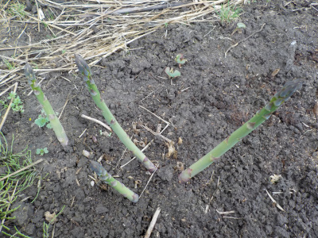
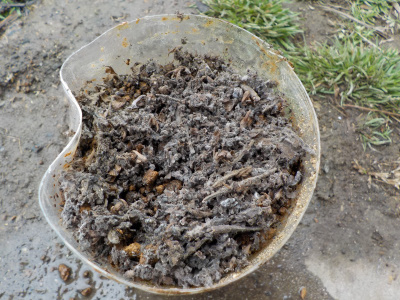
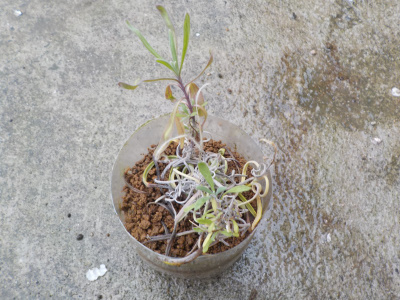
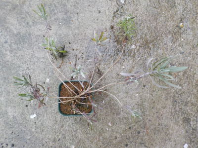
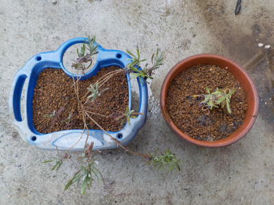
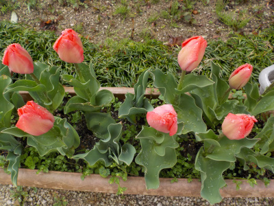

遊びで植物を育てよう
2021/03/28
アスパラの季節になりました。

成長するのはうれしいですが、今他に食べる野菜が沢山あるのであんまり育って欲しくないです。
たぶんまだ美味しくないと思うし。
【3月TOP】
【日記TOP】
【園芸TOP】
2021/03/28
コリウスの花柄を土に蒔きました。

去年採ったコリウスの花柄をペットボトルに蒔きました。
蒔いたといっても湿った土の上に乗せただけです。
花柄に種がある感じはしないんですが、ひょっとしたら何粒かあるかもしれないので挑戦しました。
花柄がしっかり枯れちゃって、ボロボロになってホコリみたいです。
【3月TOP】
【日記TOP】
【園芸TOP】
2021/03/21
挿し木のラベンダーを植替えしました。

暖かくなってきたので、ペットボトルで挿木したラベンダーを植替えします。

以前に小さな鉢に植替えしたラベンダーも成長し過ぎたので大きな鉢に植替えです。

これでたぶん大きく育つでしょう。
【3月TOP】
【日記TOP】
【園芸TOP】
2021/03/21
チューリップのつぼみは綺麗ですね。

咲いている時よりもツボミの方が色合いが淡くて好きです。
今が一番いい感じかな。
【3月TOP】
【日記TOP】
【園芸TOP】
過去の日記
【2024年4月の日記】
【2023年3月の日記】
【2022年3月の日記】
【2021年3月の日記】
【2020年3月の日記】
【2019年3月の日記】
【2018年3月の日記】
【2017年3月の日記】
【2016年3月の日記】
【2015年3月の日記】
【2014年3月の日記】
【2013年3月の日記】
【3月TOP】
【日記TOP】
【園芸TOP】
畑仕事じゃないよ。
【おいしいものを食べよう。】【たくさん寝よう。】
【ソロ活をしよう!】【季節感のあることをしよう。】【動画視聴はほどほどに。】【当サイトの全てのコンテンツは無断転載禁止です。】